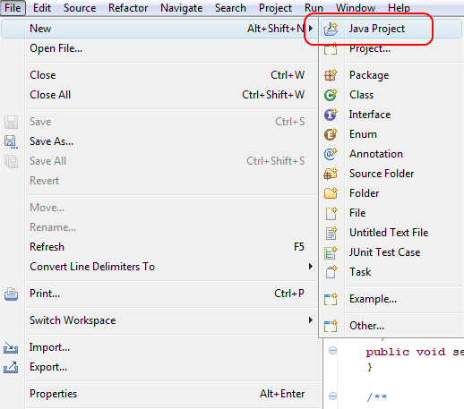
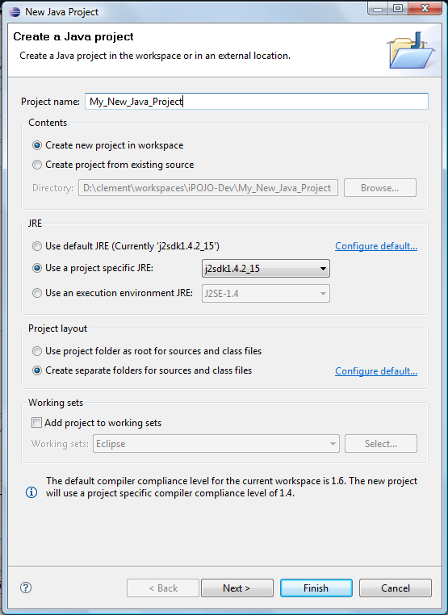
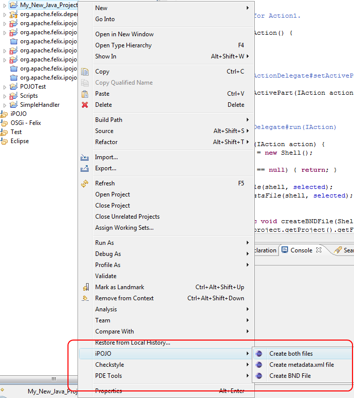
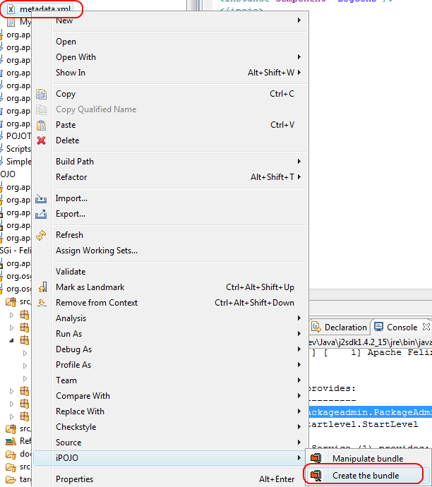
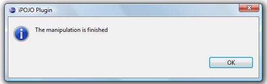
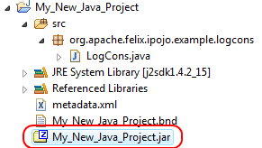
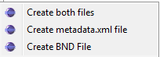
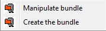

iPOJO Eclipse Plug-in
| Update The iPOJO Eclipse plugin is now hosted and supported in the iPOJO Toolbox project. |
iPOJO is based on a byte code manipulation. So, it requires a different packaging process as "normal" bundle. This plug-in allow to build an "iPOJO bundle" directly from Eclipse. Moreover, by collaborating with BND (see http://www.aqute.biz/Code/Bnd), it simplifies the creation of bundles.
Installation
The plug-in requires Eclipse 3.3 (Europa) or higher. The plug-in can be installed from the following update site : http://clement.plop-plop.net/update/
Usage
Once installed, create a Java project to use the plug-in.

The new java project wizard appears. Enter the project name without spaces. Configure the Java project as you want.

Then, right click on the new project, go inside the iPOJO sub-menu and click on "create both files". This action will create two file in your java project. The $project_name.bnd file configure BND and contains the declaration of imported, private and exported packages. The second file (metadata.xml) contains the iPOJO bundle configuration.

As you create the two file, you should obtain something like :
Imagine that you implement a simple component displaying each message pushed inside the OSGi™ Log Service. The following code snippet shows one possible implementation of this component :
package org.apache.felix.ipojo.example.logcons; import java.text.DateFormat; import java.util.Date; import org.osgi.service.log.LogEntry; import org.osgi.service.log.LogListener; import org.osgi.service.log.LogReaderService; import org.osgi.service.log.LogService; public class LogCons implements LogListener{ private LogReaderService reader; public void start() { reader.addLogListener(this); } public void stop() { reader.removeLogListener(this); } public void logged(LogEntry entry) { Date date = new Date(entry.getTime()); String message = ""; switch(entry.getLevel()) { case LogService.LOG_DEBUG: message = "[DEBUG] " + DateFormat.getInstance().format(date) + " - " + entry.getMessage(); break; case LogService.LOG_ERROR: message = "[ERROR] " + DateFormat.getInstance().format(date) + " - " + entry.getMessage(); break; case LogService.LOG_INFO: message = "[INFO] " + DateFormat.getInstance().format(date) + " - " + entry.getMessage(); break; case LogService.LOG_WARNING: message = "[WARNING] " + DateFormat.getInstance().format(date) + " - " + entry.getMessage(); break; default: message = "[UNKNOWN] " + DateFormat.getInstance().format(date) + " - " + entry.getMessage(); break; } System.out.println(message); } }
Once implemented, you need to fill out the BND file with following information:
Import-Package: * Private-Package: org.apache.felix.ipojo.example.logcons
Then, the metadata.xml file needs to be filled out. We declare the LogCons component type with a simple service requirement on the LogReaderService and two lifecycle callbacks. To finish, we declare an instance of this component type.
<ipojo> <!-- Declare the component type for LogCons --> <component classname="org.apache.felix.ipojo.example.logcons.LogCons" name="LogCons"> <requires field="reader"/> <callback transition="validate" method="start"/> <callback transition="invalidate" method="stop"/> </component> <!-- Create a LogCons instance --> <instance component="LogCons"/> </ipojo>
Once all is complete, we can build the bundle by doing a right-click on the metadata.xml file. Then go to the iPOJO sub-menu and click on Create Bundle.

If all is correctly configured, the following message appears, else warnings or errors are displayed in a message box too.

Your project contains now the build bundle. The bundle has the same name as your project.

Plug-in options
On Java project

- Create both files : create both the BND file and the metadata.xml file (replace existing one)
- Create metadata.xml file : create only the metadata.xml file
- Create BND file : create only the BND file
On metadata.xml file

- Manipulate bundle: take an already created bundle and manipulate it. This option is use when you don't use BND to create a bundle
- Create bundle: create a bundle "from scratch", first create a bundle with BND and then manipulate it.
Conclusion
This page has presented the iPOJO Eclipe plug-in.
Subscribe to the Felix users mailing list by sending a message to users-subscribe@felix.apache.org; after subscribing, email questions or feedback to users@felix.apache.org